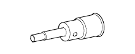
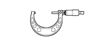
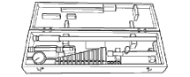
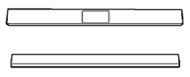

Cylinder Block Assembly (2GR-FE) Preparation [Disassembly]
 | 09010-3C110 | Hexagon Socket Wrench Set |
 | (09013-6C100) | Socket Hexagon 5mm |
| 09011-1C500 | Socket Wrench 12mm | |
 | 09051-1C110 | Plastic-faced Hammer |
 | 09072-1C200 | Vernier Caliper 150mm |
| Z-202 | Piston Ring Tool Supplied by Banzai Ltd. | |
| RE-202 | Piston Ring Tool Supplied by Iyasaka Co., Ltd. | |
 | 100MB | Micrometer Measuring Range: 75 to 100mm Supplied by Banzai Ltd. |
 | 2046-08 | Dial Indicator (10mm) Supplied by Banzai Ltd. |
 | 25MB | Micrometer Measuring Range: 0 to 25mm Supplied by Banzai Ltd. |
| 75MB | Micrometer Measuring Range: 50 to 75mm Supplied by Banzai Ltd. | |
 | BC-50 | Cylinder Gauge Measuring Range: 50 to 100mm Supplied by Banzai Ltd. |
| DCG-30A | Dial Caliper Gauge Measuring Range: 10 to 30mm Supplied by Banzai Ltd. | |
 | SE-50 | Straightedge Supplied by Banzai Ltd. |
 | TMA-20 | Thermometer Supplied by Banzai Ltd. |
 | V-150B | V-block Supplied by Banzai Ltd. |
| CC-150 | Cylinder Gauge Measuring Range: 50 to 100mm Available from Iyasaka Ltd. | |
| M110-25 | Micrometer Measuring Range 0 to 25mm Supplied by Iyasaka Co., Ltd. |
| OM100 | Micrometer Measuring Range: 75 to 100mm Supplied by Iyasaka Co., Ltd. | |
| OM75 | Micrometer Measuring Range: 50 to 75mm Supplied by Iyasaka Co., Ltd. | |
| SE-5 | Straightedge Supplied by Iyasaka Co., Ltd. | |
| TH-10A | Thermometer Supplied by Iyasaka Co., Ltd. |
| TM-110 | Dial Indicator (10mm) Supplied by Iyasaka Co., Ltd. |
| VBB-150 | V-block Supplied by Iyasaka Co., Ltd. |
| YC-1 | Dial Caliper Gauge Measuring Range: 10 to 30mm Supplied by Iyasaka Co., Ltd. | |
 | MB-B | Magnetic Base Supplied by Banzai Ltd. and Iyasaka Co., Ltd. |
 | PG-1 | Press Gauge Measuring Range: 0.025 to 0.076 Supplied by Banzai Ltd. and Iyasaka Co., Ltd. |
 | QL-100N | QL Torque Wrench (100N) Supplied by Banzai Ltd. and Iyasaka Co., Ltd. |
| Toyota Genuine Engine Oil | ||
| Paint | ||
| Protective Tape |